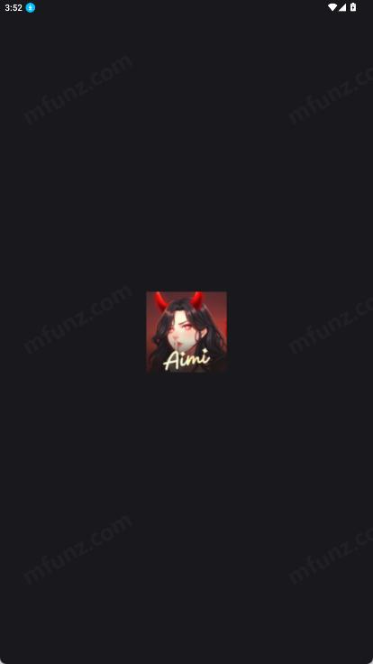

Aimi 看着简单？这五个坑我踩过，你绕着走
Aimi 是个主打 AI 角色聊天的应用，下载量不小但装不上、切错语言、信破解版的人不少——把这几个坑提前知道，省得像我一样折腾一下午。
说实话，Aimi官网上介绍自己是个 AI 角色聊天应用，看着真的很简单——下载、安装、开聊，三步搞定。但我第一次上手的时候，在第一步就卡了快俩小时。不是我笨，是这软件有几个暗坑，不提前了解根本想不到。
今天把我踩过的坑列出来，你装的时候对照着来，应该能省不少事。
第一个坑：系统版本太低，APK 点了没反应
我从Aimi下载拿了安装包，点开直接弹了个"解析错误"。第一反应是安装包坏了，重下了三遍，还是一样。又换了文件管理器打开、用不同浏览器下载，来回折腾了一个多小时。
最后才发现不是安装包的问题——我那台老安卓手机的系统版本是 5.0。Aimi 最低要求是 5.2 以上，差了 0.2 个版本号，直接装不上。
这软件的版本检查做得很死，低于 5.2 就是进不来，没有任何提示说"你系统版本不够"，就一个干巴巴的解析错误。
解法很简单：装之前先查一下系统版本。进设置找「关于手机」或者「系统信息」，看 Android 版本那一行。低于 5.2 的话，先去系统更新里看看厂商有没有推升级包。老机型很多厂商早就停更了，那就只能换设备——别刷 ROM，风险大得很。
第二个坑：未知来源权限给错了应用
安卓对非应用商店的安装有一道拦截：「禁止安装来自此来源的应用」。按提示去设置里给权限，这个大家应该都熟。但我第一次给权限的时候踩了个小坑。
我是用 QQ 浏览器下载的安装包，第一次给权限的时候手抖点成了文件管理器。结果返回安装界面，还是弹"禁止安装"。我以为系统没刷新，重启了手机、清了缓存，还是一样。
后来才反应过来：这个权限是针对具体应用的。你用哪个应用下载的，就给哪个应用开权限。换了下载器就得重新授一次。
怎么找到正确的权限设置：进设置 → 安全或隐私 → 安装未知应用。然后看列表里哪个应用是你刚才用来下载的，点进去打开允许开关。
第三个坑：手滑切了不认识的语言
Aimi 能切换界面语言，这点挺好。但我有天晚上躺着刷手机，迷迷糊糊点设置的时候，不小心碰了语言切换，切成了个我不认识的东西——可能是日语或者韩语，界面上全是方框和奇怪的符号。
那一瞬间我慌了。设置里的每一项都看不懂，完全不知道该点哪里切回来。
别慌，有两个办法：
第一种，凭记忆找位置。语言设置一般在设置页里比较靠上的位置，图标可能是个地球或者 A 字母。记住大概的位置，凭感觉点进去，再凭感觉找"简体中文"或者"Chinese"。我当时就是靠记忆点回去的，没重装。
第二种，实在找不到就清缓存或者重装应用。首次启动的时候都会让你选语言，这个 100% 能找回。
推荐第一种，几分钟就搞定。更详细的操作说明可以去看Aimi文档。
第四个坑：差点信了破解版的鬼话
Aimi 有付费功能，我装完之后好奇想看看都有啥，就在网上搜了一下。结果出来一堆"破解版""永久会员""内购解锁"，甚至有个帖子说能改本地文件绕过付费验证。
差点就下载了。还好转念一想，Aimi 是 AI 角色聊天的应用，背后靠的是服务器端的模型。客户端那个 APK 里根本没有什么"付费验证开关"可以让你改。就算真有个能跑的"破解版"，大概率也是被二次打包塞了木马或者偷广告扣费的东西。
正确做法：付费功能只从应用内原生入口开通。进账户设置或者会员入口，那里才是官方的付费渠道。第三方网站、代充群、闲鱼上的"会员代充"全是坑——支付了拿不到权益、被诱导给账号密码、被盗号，这都是真实案例。
第五个坑：改 build.prop 改版本号没用
就在我因为系统版本太低装不上、四处查办法的时候，看到有人说：改手机里的 build.prop 文件，把版本号改成 5.2 就行。我当时脑子一热，真去找教程改了。
改完重启手机，系统显示的版本号确实变成了 5.2。但再点 Aimi 的安装包，还是解析错误。
后来才搞明白：Aimi 检查的是 Android API 等级，不是版本号字符串。安卓 5.0 对应的 API 等级是 21，5.2 是 23。改版本号只是改了个显示给你看的数字，API 等级是硬编码在系统里的，改不动。
别在这上面浪费时间，要么升级系统，要么换设备。手动刷高版本 ROM 也不靠谱，普通用户搞不好直接变砖。

防坑清单
写到这里，五个坑都说完了。最后整理一个速查表，装 Aimi 之前过一眼：
- 先查系统版本：设置里找 Android 版本，低于 5.2 的先升级，升不了就换设备
- 给对安装权限：用哪个应用下载的，就给哪个应用开"安装未知应用"权限
- 别碰破解版：AI 服务端的东西客户端破解不了，贪便宜反而容易中木马
- 切语言慢一点：躺着刷手机的时候别瞎点，真切错了凭记忆找回去就行
- 版本号改不动：Aimi 查的是 API 等级，改 build.prop 白费劲
知道这些坑之后，这软件其实相当省心。安装流程正常走的话几分钟就能搞定，核心聊天功能也是免费可用的。希望你装的时候别像我一样在坑里兜俩小时。如果你需要更完整的资料，GitHub、Gitee 和 GitCode 上都有同步的仓库可以查阅。